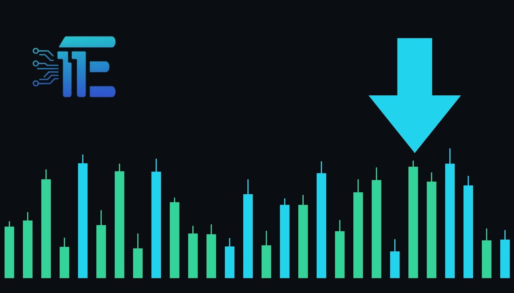

Gold Slumps and Hits 52-Week Low Amid Safe-Haven Shiftមាសធ្លាក់ចុះដល់កម្រិតទាបបំផុតក្នុងរយៈពេល៥២សប្តាហ៍ចំពេលទីផ្សារមានការប្រែប្រួល
XAU/USD impact: ▼ Bearishផលប៉ះពាល់លើ XAU/USD: ▼ ធ្លាក់

Precious metals declined despite rising market volatility, with spot gold dropping three percent. This unusual divergence challenges safe-haven demand dynamics for the precious metal.
តម្លៃលោហៈមានតម្លៃបានធ្លាក់ចុះ ទោះបីជាភាពប្រែប្រួលក្នុងទីផ្សារមានការកើនឡើងក៏ដោយ។ ស្ថានភាពនេះបង្កើនសំណួរអំពីតម្រូវការជម្រកសុវត្ថិភាពសម្រាប់មាស។
Precious metals faced intense downward pressure recently, with spot gold declining significantly by three percent and hitting a fresh 52-week low. At the same time, spot silver dropped below fifty dollars an ounce for the first time since November 2025. Interestingly, this sharp retreat in precious metal valuations occurred despite an observable uptick in broader market volatility.
លោហៈមានតម្លៃបានប្រឈមមុខនឹងសម្ពាធធ្លាក់ចុះយ៉ាងខ្លាំង និងបានប៉ះកម្រិតទាបថ្មីក្នុងរយៈពេល៥២សប្តាហ៍។ ឆ្នាំ២០២៥ មក។ ការធ្លាក់ចុះនៃតម្លៃលោហៈមានតម្លៃនេះបានកើតឡើង ទោះបីជាមានការកើនឡើងនូវភាពប្រែប្រួលនៅក្នុងទីផ្សារទូទៅក៏ដោយ។
Typically, heightened market volatility and economic uncertainty drive investors toward traditional safe-haven assets like gold as a reliable store of value. However, the recent price action demonstrated that gold was not acting like a typical safe-haven asset, as selling pressure persisted. This disconnect raises important questions about shifting capital flows and how investors currently allocate funds during turbulent market phases.
ជាទូទៅ ភាពប្រែប្រួលខ្ពស់ក្នុងទីផ្សារនិងភាពមិនប្រាកដប្រជាផ្នែកសេដ្ឋកិច្ចតែងតែជំរុញឱ្យអ្នកវិនិយោគងាកទៅរកទ្រព្យសកម្មសុវត្ថិភាពដូចជាមាស ដើម្បីរក្សាតម្លៃ។ ប៉ុន្តែ សកម្មភាពតម្លៃនាពេលថ្មីៗនេះបានបង្ហាញថា មាសមិនបានដើរតួជាទ្រព្យសកម្មសុវត្ថិភាពធម្មតានោះទេ ដោយសារសម្ពាធនៃការលក់នៅតែបន្តកើតមាន។ ការណ៍នេះបង្កើនការយកចិត្តទុកដាក់លើការប្តូរទិសដៅនៃទុនវិនិយោគ និងរបៀបដែលអ្នកវិនិយោគបែងចែកប្រាក់ក្នុងអំឡុងពេលទីផ្សារមានភាពចលាចល។
From a balanced market perspective, certain factors could support a recovery in XAU/USD if broader macroeconomic conditions shift. A resurgence of genuine safe-haven demand driven by escalating geopolitical tensions or deeper equity market distress would typically underpin gold prices. Conversely, if market participants continue favoring other asset classes or if broader risk sentiment normalizes without drawing capital into bullion, further downward pressure could weigh on the precious metal.
ពីទស្សនៈទីផ្សារដែលមានតុល្យភាព កត្តាជាក់លាក់អាចគាំទ្រដល់ការងើបឡើងវិញនៃ XAU/USD ប្រសិនបើបរិយាកាសម៉ាក្រូសេដ្ឋកិច្ចផ្លាស់ប្តូរ។ ការត្រឡប់មកវិញនៃតម្រូវការជម្រកសុវត្ថិភាពពិតប្រាកដ ដែលជំរុញដោយភាពតានតឹងភូមិសាស្ត្រនយោបាយ ឬបញ្ហាទីផ្សារភាគហ៊ុន ជាទូទៅអាចគាំទ្រដល់តម្លៃមាស។ ផ្ទុយទៅវិញ ប្រសិនបើអ្នកចូលរួមទីផ្សារបន្តពេញចិត្តទ្រព្យសកម្មផ្សេងទៀត ឬប្រសិនបើអារម្មណ៍ហានិភ័យទូទៅមានភាពប្រក្រតីដោយមិនទាក់ទាញទុនចូលមកក្នុងមាស សម្ពាធធ្លាក់ចុះបន្ថែមទៀតអាចកើតមានឡើង។
Traders monitoring the XAU/USD market should closely watch broader currency fluctuations, particularly the trajectory of the US dollar and Treasury yields, as these variables heavily influence precious metal valuations. Additionally, observing whether market volatility eventually translates into renewed physical or institutional safe-haven buying will be crucial for identifying potential trend reversals.
អ្នកជួញដូរដែលតាមដានទីផ្សារ XAU/USD គួរតែពិនិត្យមើលការប្រែប្រួលរូបិយប័ណ្ណទូទៅ ជាពិសេសទិសដៅរបស់ដុល្លារអាមេរិក ព្រោះកត្តាទាំងនេះមានឥទ្ធិពលខ្លាំងលើតម្លៃលោហៈមានតម្លៃ។ លើសពីនេះ ការតាមដានថាតើភាពប្រែប្រួលទីផ្សារនឹងអាចជំរុញឱ្យមានការទិញដើម្បីសុវត្ថិភាពសារជាថ្មីឬយ៉ាងណា គឺជារឿងសំខាន់សម្រាប់ការកំណត់សញ្ញាប្រែប្រួលនិន្នាការ។
Key takeawaysចំណុចសំខាន់ៗ
- Spot gold dropped three percent to hit a new 52-week low.
- តម្លៃមាសបានធ្លាក់ចុះបីភាគរយ និងបានប៉ះកម្រិតទាបថ្មីក្នុងរយៈពេល៥២សប្តាហ៍។
- Precious metals declined despite a noticeable rise in market volatility.
- លោហៈមានតម្លៃបានធ្លាក់ចុះ ទោះបីជាភាពប្រែប្រួលក្នុងទីផ្សារមានការកើនឡើងក៏ដោយ។
- Silver prices also fell below fifty dollars an ounce for the first time since November 2025.
- តម្លៃប្រាក់ក៏បានធ្លាក់ចុះក្រោមហាសិបដុល្លារក្នុងមួយអោនជាលើកដំបូងចាប់តាំងពីខែវិច្ឆិកា ឆ្នាំ២០២៥។
Original commentary by THE MARKET CODE, based on public reporting from Yahoo! Finance: GC=F News. Written with the help of AI. Educational only, not financial advice.
មតិវិភាគដើមដោយ THE MARKET CODE ផ្អែកលើការរាយការណ៍សាធារណៈពី Yahoo! Finance: GC=F News។ សរសេរដោយមានជំនួយពី AI។ មាតិកាអប់រំប៉ុណ្ណោះ មិនមែនជាដំបូន្មានហិរញ្ញវត្ថុទេ។